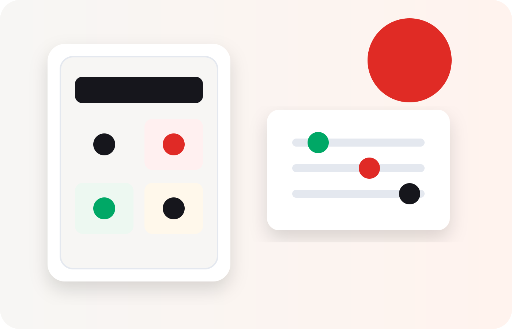

Impostos
Onde fazer Furusato Nozei?
A melhor plataforma não é igual para todo mundo. Compare facilidade, catálogo, acompanhamento e o procedimento depois da doação.
Desde outubro de 2025, os portais não podem conceder pontos próprios pela doação — a escolha deve focar na experiência e no suporte, não em vantagem financeira extra.

Resposta rápida
Para iniciantes, escolha a plataforma cuja navegação você já conhece e que facilite o acompanhamento da doação. Amazon e Rakuten costumam parecer familiares a quem já compra nelas; Satofull tem aplicativo próprio com One-Stop online para doações e municípios elegíveis; Furusato Choice se destaca pela amplitude de opções e projetos regionais. Os recursos disponíveis variam por município.
Antes de comparar
O benefício fiscal básico é definido pelo sistema, não pela loja escolhida.
Mesmo limite fiscal
Trocar de plataforma não aumenta o seu limite pessoal de dedução.
Catálogo pode variar
Municípios e presentes disponíveis não são idênticos em todos os portais.
One-Stop varia
Os processos digitais dependem da prefeitura, da plataforma e da integração disponível.
Comparação prática
Use a tabela como ponto de partida e confirme os recursos atuais antes de doar.
| Plataforma | Boa para | Ponto forte | Conferir antes |
|---|---|---|---|
| Amazon Furusato | Quem já compra na Amazon | Navegação familiar e conta já conhecida | Municípios, entrega e caminho do One-Stop |
| Rakuten Furusato | Usuários do ecossistema Rakuten | Grande catálogo e histórico integrado à conta | Doações não recebem pontos do portal desde 1/10/2025 |
| Satofull | Quem prefere aplicativo e acompanhamento | Aplicativo próprio e One-Stop online para doações e municípios elegíveis | Elegibilidade do município e necessidade de app |
| Furunavi | Quem quer comparar categorias e campanhas da própria plataforma | Amplo catálogo, com destaque para eletrodomésticos e itens de maior valor | Condições vigentes e suporte ao município escolhido |
| Furusato Choice | Quem prioriza variedade, projetos e escolha do uso da doação | Maior número de municípios participantes e iniciativas regionais | Pagamento, entrega e fluxo pós-doação de cada município |
Recursos e condições mudam com o tempo. Confirme diretamente com a plataforma antes de doar.
Escolha em quatro perguntas
- 1
Eu já tenho conta?
Uma conta conhecida reduz erros de nome, endereço e pagamento.
- 2
O presente está disponível?
Compare município, prazo de entrega, quantidade e condições.
- 3
Como acompanho?
Veja histórico, comprovante, status do One-Stop e canais de suporte.
- 4
Consigo entender o japonês?
Escolha o fluxo mais simples pra você, não o que parece ter mais propaganda.
Cuidado com sites falsos
Use sempre os endereços oficiais e desconfie de qualquer "desconto" no valor da doação. Furusato Nozei não funciona como liquidação de produto.
Confirme a URL, o município, o valor e a plataforma antes de pagar.
Perguntas frequentes
Qual plataforma dá mais pontos?
Posso usar mais de uma plataforma no mesmo ano?
Amazon ou Rakuten?
O One-Stop fica mais fácil em uma plataforma?
Fontes consultadas
- Páginas oficiais da Amazon Furusato, Rakuten Furusato, Satofull e Furusato Choice.
- Aviso oficial sobre a proibição de pontos de portais pela doação, em vigor desde outubro de 2025 (Ministério de Assuntos Internos e Comunicações).
Funcionalidades mudam com o tempo. Revisamos esta tabela periodicamente, mas confirme sempre os recursos atuais antes de doar.
Escolha depois de calcular
O limite vem antes da plataforma. Depois compare o presente e o procedimento.